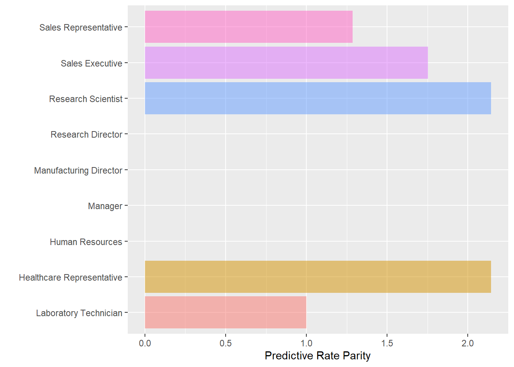
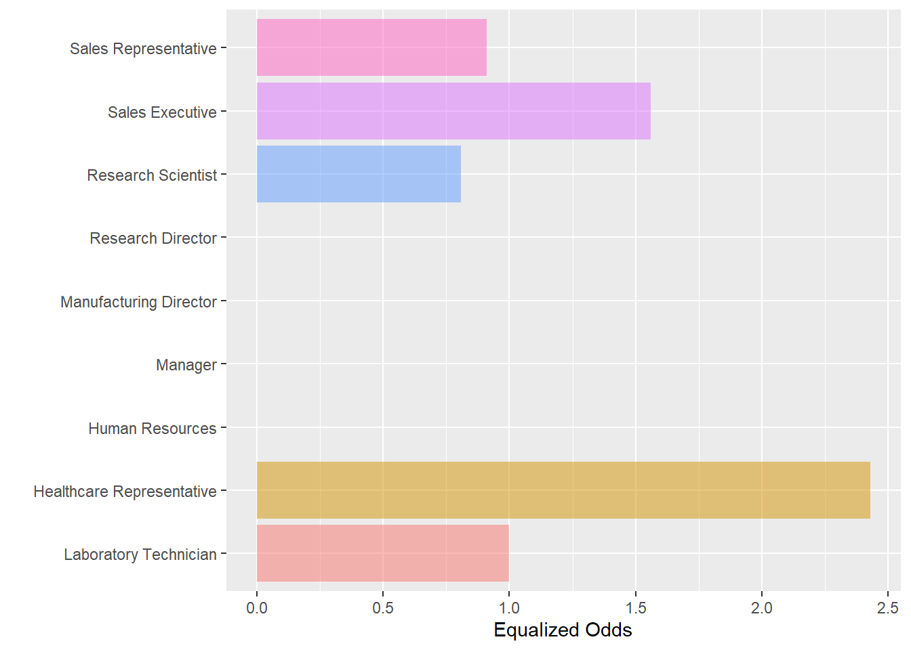
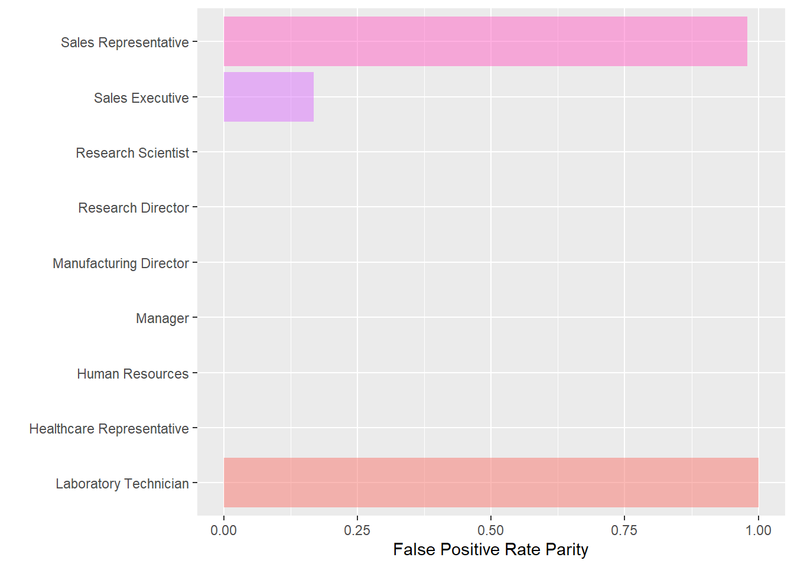

library(tidyverse) # Datahåndtering, grafikk og glimpse()
library(rsample) # for å dele data i training og testing
library(caret) # Funksjonen confusionMatrix()
library(fairness) # Beregne mål på fairness8 En lett introduksjon til fairness
I dette kapittelt skal vi bruke følgende pakker:
Nå som vi har sett på klassifikasjonstrær, bagging og random forest er det på tide å gjøre noen rettferdighetsbetraktninger. Vi starter med et eksempel basert på logistisk regresjon for å introdusere begreper og mål, og i neste kapittel skal vi se hvordan vi kan tune random forest for å motvirke bias.
8.1 Hva slags rettferdighet
I denne settingen kan rettferdighet kommer i betraktning på flere måter, herunder følgende:
- I hvilken grad maskiner vs mennesker tar avgjørelser, og herunder mulighet til å bli hørt og legge frem sin sak
- I hvilken grad dataene algoritmen er trent opp på inneholder skjevheter i utgangspunktet som så reproduseres i videre implementering
- I hvilken grad sluttresultatet har rimelig presisjon og akseptable feilrater, herunder vurdering av asymetriske feilrater
- I hvilken grad forrige punkt er avpasset mot hvilke tiltak man så setter i verk
- I hvilken grad feilrater og presisjon varierer systematisk med undergrupper i populasjonen
Det er nok av ting å tak i her, men vi skal her fokusere på det som kan tallfestes gitt den modellen man har. Men for all del: Hvis datakvaliteten er det begrenset hvor bra det kan bli uansett. Selv om kjente skjevheter i dataene kan i prinsippet motarbeides, så er det vel i praksis slik at en skjevhet kommer sjelden alene?
Vurderinger av overordnet feilrater er et gjennomgående tema, så vi starter med det. Deretter skal vi se på mål på skjevheter over undergrupper. Prinsippet er relativt enkelt, uten at vurderingene blir enkle av den grunn.
8.2 Mer confusion matrix
Et utgangspunkt er det vi kaller confusion matrix. Det er rett og slett en krysstabell der vi sammenholder predikert og observert utfall. Å lage en slik tabell avhenger ikke av metoden vi bruker, bare at vi kan sammenlignet prediksjon med faktisk utfall.
Vi bruker eksempelet fra forrige kapittel med logistisk regresjon.
est_multlogit <- glm(Attrition ~ ., data = training, family = "binomial")
summary(est_multlogit)
Call:
glm(formula = Attrition ~ ., family = "binomial", data = training)
Coefficients:
Estimate Std. Error z value Pr(>|z|)
(Intercept) -1.090e+01 7.450e+02 -0.015 0.988322
Age -3.671e-02 1.637e-02 -2.243 0.024906 *
BusinessTravelTravel_Frequently 1.627e+00 4.663e-01 3.490 0.000483 ***
BusinessTravelTravel_Rarely 8.847e-01 4.265e-01 2.074 0.038070 *
DailyRate -3.249e-04 2.657e-04 -1.223 0.221450
DepartmentResearch & Development 1.303e+01 7.450e+02 0.017 0.986048
DepartmentSales 1.348e+01 7.450e+02 0.018 0.985565
DistanceFromHome 4.325e-02 1.308e-02 3.307 0.000944 ***
Education 2.259e-03 1.047e-01 0.022 0.982789
EducationFieldLife Sciences -8.614e-01 1.036e+00 -0.832 0.405637
EducationFieldMarketing -2.986e-01 1.085e+00 -0.275 0.783245
EducationFieldMedical -9.341e-01 1.037e+00 -0.901 0.367673
EducationFieldOther -8.090e-01 1.106e+00 -0.731 0.464508
EducationFieldTechnical Degree 6.014e-02 1.057e+00 0.057 0.954635
EmployeeNumber -3.297e-04 1.818e-04 -1.814 0.069727 .
EnvironmentSatisfaction -4.976e-01 9.990e-02 -4.981 6.31e-07 ***
GenderMale 2.224e-01 2.157e-01 1.031 0.302405
HourlyRate -3.877e-03 5.392e-03 -0.719 0.472136
JobInvolvement -5.454e-01 1.458e-01 -3.741 0.000183 ***
JobLevel -1.437e-02 3.834e-01 -0.037 0.970101
JobRoleHuman Resources 1.413e+01 7.450e+02 0.019 0.984868
JobRoleLaboratory Technician 1.579e+00 5.597e-01 2.822 0.004773 **
JobRoleManager -1.613e+00 1.280e+00 -1.260 0.207596
JobRoleManufacturing Director -2.403e-01 6.135e-01 -0.392 0.695291
JobRoleResearch Director -2.531e+00 1.243e+00 -2.035 0.041806 *
JobRoleResearch Scientist 3.845e-01 5.748e-01 0.669 0.503513
JobRoleSales Executive 3.167e-01 1.614e+00 0.196 0.844462
JobRoleSales Representative 1.478e+00 1.662e+00 0.890 0.373555
JobSatisfaction -3.238e-01 9.696e-02 -3.340 0.000839 ***
MaritalStatusMarried 3.633e-01 3.130e-01 1.161 0.245800
MaritalStatusSingle 9.102e-01 4.057e-01 2.243 0.024875 *
MonthlyIncome 9.730e-05 9.890e-05 0.984 0.325190
MonthlyRate 1.173e-05 1.499e-05 0.783 0.433906
NumCompaniesWorked 1.705e-01 4.652e-02 3.665 0.000248 ***
OverTimeYes 1.892e+00 2.308e-01 8.195 2.50e-16 ***
PercentSalaryHike -6.513e-02 4.714e-02 -1.382 0.167122
PerformanceRating 6.772e-01 4.816e-01 1.406 0.159676
RelationshipSatisfaction -3.888e-01 9.884e-02 -3.934 8.37e-05 ***
StockOptionLevel -2.737e-01 1.822e-01 -1.502 0.133202
TotalWorkingYears -6.528e-02 3.587e-02 -1.820 0.068731 .
TrainingTimesLastYear -2.136e-01 8.571e-02 -2.492 0.012712 *
WorkLifeBalance -2.117e-01 1.469e-01 -1.441 0.149470
YearsAtCompany 6.602e-02 4.876e-02 1.354 0.175764
YearsInCurrentRole -1.021e-01 5.548e-02 -1.840 0.065748 .
YearsSinceLastPromotion 2.056e-01 5.166e-02 3.979 6.91e-05 ***
YearsWithCurrManager -1.933e-01 6.078e-02 -3.180 0.001473 **
---
Signif. codes: 0 '***' 0.001 '**' 0.01 '*' 0.05 '.' 0.1 ' ' 1
(Dispersion parameter for binomial family taken to be 1)
Null deviance: 944.39 on 1101 degrees of freedom
Residual deviance: 616.66 on 1056 degrees of freedom
AIC: 708.66
Number of Fisher Scoring iterations: 15Så kan vi gjøre en prediksjon på testing-datasettet og lagre resultatet i et nytt objekt. Vi gjør en klassifisering ved å bestemme en cut-off på f.eks. en sannsynligheten over 50%.
attrition_test <- testing %>%
mutate(prob = predict(est_multlogit, newdata = testing, type = "response")) %>%
mutate(attrition_class = as.factor(ifelse(prob < .5, "No", "Yes")))Så kan vi lage confusion matrix som følger. Vi bruker funksjonen confusionMatrix() for at diverse mål skal blir regnet ut automatisk for oss, men du kan godt regne ut dette for hånd også (hvis du gidder).
cm <- confusionMatrix(attrition_test$Attrition, attrition_test$attrition_class, positive = "Yes")
cmConfusion Matrix and Statistics
Reference
Prediction No Yes
No 288 12
Yes 42 26
Accuracy : 0.8533
95% CI : (0.8129, 0.8878)
No Information Rate : 0.8967
P-Value [Acc > NIR] : 0.9965
Kappa : 0.4128
Mcnemar's Test P-Value : 7.933e-05
Sensitivity : 0.68421
Specificity : 0.87273
Pos Pred Value : 0.38235
Neg Pred Value : 0.96000
Prevalence : 0.10326
Detection Rate : 0.07065
Detection Prevalence : 0.18478
Balanced Accuracy : 0.77847
'Positive' Class : Yes
Hvorvidt dette er “rettferdig” eller ikke kommer jo an på hva man skal gjøre med denne prediksjonen. Så det er jo en første vurdering. Synes man feilratene er ok? Er evt. konsekvensene av å ikke gjøre noe ok?
I dette eksempelet er positive predictive value 0.38 som altså er andelen av de som er predikert som positive som er rett. Det betyr at hvis vi setter i verk tiltak mot alle som er predikert positive, så vil 0.62 være bortkastet. På den annen side, vil 0.68 av de som faktisk er positive fanges opp (sensitivity).1
8.3 Mål på fairness
8.3.1 Predictive rate parity
Ovenfor så vi blant annet at “positive predicted value” , altså andelen sanne positive av alle predikerte positive, er 0.382.
Men det er ulike typer jobber i denne bedriften. Her er fordelingen for test-datasettet:
| Characteristic | Overall N = 3681 |
No N = 3001 |
Yes N = 681 |
|---|---|---|---|
| JobRole | |||
| Healthcare Representative | 32 (100%) | 31 (97%) | 1 (3.1%) |
| Human Resources | 14 (100%) | 11 (79%) | 3 (21%) |
| Laboratory Technician | 64 (100%) | 47 (73%) | 17 (27%) |
| Manager | 27 (100%) | 24 (89%) | 3 (11%) |
| Manufacturing Director | 32 (100%) | 29 (91%) | 3 (9.4%) |
| Research Director | 18 (100%) | 17 (94%) | 1 (5.6%) |
| Research Scientist | 77 (100%) | 59 (77%) | 18 (23%) |
| Sales Executive | 84 (100%) | 70 (83%) | 14 (17%) |
| Sales Representative | 20 (100%) | 12 (60%) | 8 (40%) |
| 1 n (%) | |||
For illustrasjonens skyld kan vi da dele inn datamaterialet i to deler: lab-teknikkere og resten. For hver gruppe kan vi så lage en confusion matrix og undersøke verdiene.
labTech <- attrition_test %>%
filter(JobRole %in% c("Laboratory Technician"))
others <- attrition_test %>%
filter( !(JobRole %in% c("Laboratory Technician") ))
cm1 <- confusionMatrix(labTech$Attrition, labTech$attrition_class, positive = "Yes")
cm2 <- confusionMatrix(others$Attrition, others$attrition_class, positive = "Yes")
cm1 Confusion Matrix and Statistics
Reference
Prediction No Yes
No 39 8
Yes 10 7
Accuracy : 0.7188
95% CI : (0.5924, 0.824)
No Information Rate : 0.7656
P-Value [Acc > NIR] : 0.8490
Kappa : 0.251
Mcnemar's Test P-Value : 0.8137
Sensitivity : 0.4667
Specificity : 0.7959
Pos Pred Value : 0.4118
Neg Pred Value : 0.8298
Prevalence : 0.2344
Detection Rate : 0.1094
Detection Prevalence : 0.2656
Balanced Accuracy : 0.6313
'Positive' Class : Yes
cm2Confusion Matrix and Statistics
Reference
Prediction No Yes
No 249 4
Yes 32 19
Accuracy : 0.8816
95% CI : (0.8398, 0.9157)
No Information Rate : 0.9243
P-Value [Acc > NIR] : 0.997
Kappa : 0.4569
Mcnemar's Test P-Value : 6.795e-06
Sensitivity : 0.82609
Specificity : 0.88612
Pos Pred Value : 0.37255
Neg Pred Value : 0.98419
Prevalence : 0.07566
Detection Rate : 0.06250
Detection Prevalence : 0.16776
Balanced Accuracy : 0.85610
'Positive' Class : Yes
Positive predicted value for lab-teknikker er 0.412 og for resten 0.373.
Forholdstallet mellom disse er 0.9047619, alså nesten likt. Slik sett kan vi si at modellen er rettferdig på dette målet ved at disse to gruppene er like.
Men hvis du sjekker output fra confusionMatrix ovenfor, så er jo ikke alle tallene like. Så det kommer an på hvilke mål du sammenligner.
Pakken fairness gjør en tilsvarende beregning for deg og kan gi resultatet grafisk. Her er sammenligning av positive predicted value gjort for alle grupper av jobber:
pred_rate_parity(data = attrition_test,
outcome = "Attrition",
group = "JobRole",
preds = "attrition_class",
base = "Laboratory Technician"
)$Metric
Laboratory Technician Healthcare Representative
Precision 0.4666667 1.000000
Predictive Rate Parity 1.0000000 2.142857
Group size 64.0000000 32.000000
Human Resources Manager Manufacturing Director
Precision NA NA NA
Predictive Rate Parity NA NA NA
Group size 14 27 32
Research Director Research Scientist Sales Executive
Precision NA 1.000000 0.8181818
Predictive Rate Parity NA 2.142857 1.7532468
Group size 18 77.000000 84.0000000
Sales Representative
Precision 0.600000
Predictive Rate Parity 1.285714
Group size 20.000000
$Metric_plot
Nå er det vesentig større forskjeller. Utvilsomt er grunnen at gruppen av ‘andre’ var sammensatt av veldig ulike grupper som var veldig forskjellig innbyrdes, men som jevnet hverandre ut i snitt. Noen av disse gruppene var dessuten små.
Man kan mene ulikt om slikt, men det er i hvert fall ikke likt på tvers av grupper.
Men hvilke konsekvenser har dette? Treffsikkerheten er da lavere for laboratorie-teknikkerne enn for de andre gruppene. Ikke sikkert det er så nøye.
Men la oss si at man bestemmer seg for å gi en solid lønnsforhøyelse (eller andre goder) til de man tror er i fare for å bytte jobb. Da vil bedriften bruke unødig mye midler på lab-teknikkerne (dvs. relativt mange falske positive) relativt til andre grupper .
Men man kunne også tenke seg et negativt tiltak: de som er predikert å ville slutte vil ikke få lønnsforhøyelse eller andre goder. Hvis vurderingen er at de vil slutte uansett, så er det bortkastede ressurser. Flere blant lab-teknikerne ville da urettmessig få avslag.
Ok. Det ville uansett være en lite klok arbeidsgiver som baserer seg kun på dette. Det finnes bedre måter å beholde arbeidstakerne sine på. Men man kan tenke seg andre situasjoner der konsekvensene er tydeligere: Hva om det var en automatisert sjekk av kredittverdighet for å få boliglån? Eller kanskje opptak til et lederprogram? Eller risikovurdering for prøveløslatelse fra fengsel?
8.3.2 Equalized odds
En annen variant er å se på andelen sanne positive av andelen som faktisk er positive. Altså: andelen som er predikert å slutte av de som faktisk slutter. Hvis dette tallet er likt mellom grupper betyr det at modellen er like god til å fange opp de som faktisk slutter uavhengig av jobbtype. Hvis det er ulikt betyr det at modellen er flinkere til å oppdage sluttere i noen jobber enn andre.
(I følgende kode er det lagt på [[2]] på slutten for å bare vise figuren, altså droppe tabellen. Akkurat den delen av koden er ikke viktig).
equal_odds(data = attrition_test,
outcome = "Attrition",
group = "JobRole",
preds = "attrition_class",
base = "Laboratory Technician"
)[[2]]
8.3.3 False positive rate parity
Er falske positive rate i ulike grupper lik? Falsk positiv rate er andelen av de som ikke slutter som likevel blir feilaktig klassifisert som at de vil slutte. Hvis denne raten er ulik mellom grupper, vil noen grupper bli utsatt for flere unødvendige tiltak enn andre.
fpr_parity(data = attrition_test,
outcome = "Attrition",
group = "JobRole",
preds = "attrition_class",
base = "Laboratory Technician"
)[[2]]
8.4 Litt oppsummerende
Den R-pakken vi bruker her har en hel rekke ulike mål innebygget. Se en oversikt på pakkens vignette.
Hvilket mål som er viktigst er det derimot ikke noe klart svar på. Det kommer an på hva man har tenkt til å bruke prediksjonen til, hvilke konsekvenser tiltaket har, og hvilke konsekvenser det har å ikke gjøre noe. Disse konsekvensene kan vurderes forskjellig for personer etter om det er riktig eller feil prediksjon.
Det du må ta stilling til er egentlig hvor viktig du synes likebehandling er! Ofte er jo det åpenbart veldig viktig.
Så bør det nevnes at noen ganger ville man gjort noe uansett. Altså gjort de samme tiltakene basert på skjønn eller andre typer vurderinger. Det vil også ha feilrater og forskjeller mellom undergrupper i slike tilfeller, selv om man ikke har et oppsett som gir testing-data å estimere dette på. Det betyr at du ikke bare må ta stilling til om algoritmen er “fair” eller ikke, men også om den er mer eller mindre “fair” enn den alternative fremgangsmåten.
For akkurat dette kurset er ikke disse tekniske begrepene som sensitivity, specificity osv sentrale. (Emneansvarlig går surr i disse selv). Men det forventes at du skal kunne formulere det på tilsvarende måte som her. Men du må huske accuracy, som er den enkleste.↩︎